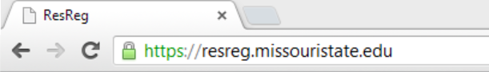
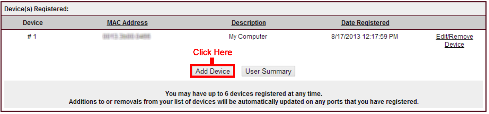

Device Register
- To register a new device, you must have a computer registered to your port.
You cannot register your first device if you are connected to the wireless network.
- On your computer, open an internet browser of your choice. In the address bar, type: https://resreg.missouristate.edu

- Once at https://resreg.missouristate.edu, click "Log In".
- Enter your BearPass Login and Password.
- Navigate towards the bottom of the page and click on, "Click here to add/remove/edit a device."
- Once in the Edit Device Registrations, click on "Add Device".

- Enter the MAC Address of the equipment you wish to register with the format ####.####.#### where # is one of the following: 01234567890abcdef. Only these characters will be accepted. Once you've entered your MAC Adress, click on "Register".

- Your device is now registered with ResReg and should have internet access.